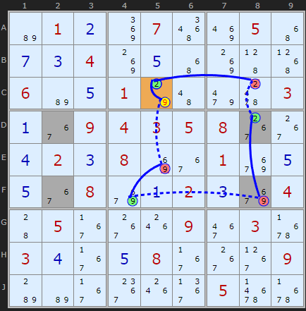
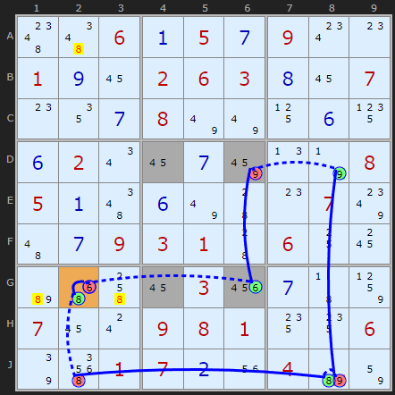
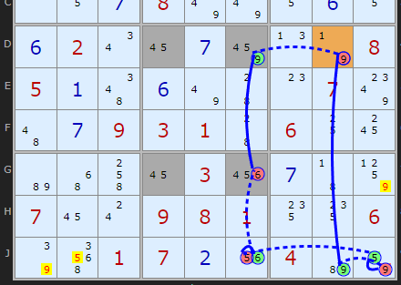

SudokuWiki.org
Strategies for Popular Number Puzzles
Using Unique Rectangles as Links in Chains
We have already seen how chains can be built using Grouped Cells and Almost Locked Sets as more complex links, expanding the number of patterns available. In this article I detail how we can use the Unique Rectangle as another type of link. And it's relatively simple! At least for the basic Type 1 Unique Rectangle most often found.
This has been on my to-do list for a long time, but I have to credit David Hollenberg for giving me the inspiration and push to implement it in the solver, having given me some examples with Y-Wing chains.
Anywhere where chains can be used this type of link is valid.
In the first example we have a Discontinuous Alternating Nice Loop that starts and ends on C5. By tracing round it can be shown that if 2 on C5 is removed the chain reaction puts the 2 right back, implying it must be the solution. 9 Can be removed from that cell.
This has been on my to-do list for a long time, but I have to credit David Hollenberg for giving me the inspiration and push to implement it in the solver, having given me some examples with Y-Wing chains.
Anywhere where chains can be used this type of link is valid.
In the first example we have a Discontinuous Alternating Nice Loop that starts and ends on C5. By tracing round it can be shown that if 2 on C5 is removed the chain reaction puts the 2 right back, implying it must be the solution. 9 Can be removed from that cell.

But what is going on on F8 and D8? The chain jumps straight from -9 on F8 to +2 on D8. The reason is simple. The four shaded cells DF28 all contain 6/7 plus these other TWO candidates 2 and 9. We know from understanding unique rectangles (type 1) that we cannot allow all four of these cells to be reduced to 6 and 7 alone - that would give two solutions to the puzzles. So one of the extra candidates must exist (or maybe both!).
The chain coming into F8 takes off the 9 there. That forces D8 to be 2 (for the duration of the chain - we don't know yet). +2 on D8 allows us to continue the chain, in this case to D9.
AIC on 2 ((w.UR) Discontinuous Alternating Nice Loop, length 8):
-2[C5]+9[C5]-9[E5]+9[F4]-9(UR[DF28])+2[D8]-2[C8]+2[C5]
- Contradiction: When 2 is removed from C5 the chain implies it must be 2 - other candidates 9 can be removed

In this next example the solver has found two options - use 'explore' and choose the 3rd and 4th. Strictly speaking we don't need to use these chains with URs as there are a couple of simpler AICs. But to illustrated the strategy I reproduce here.
Both options have off-chain eliminations.
Removing the 9 from D6 endangers the solution by exposing the unique rectangle, so we can confidently turn ON the 6 in G6. That allows us to continue and close the loop.
(This is a much harder puzzle and might require some clicking to get to the interesting step)

The 4th 'explore' option shows us another AIC with the same path and different off-chain eliminations.
The same Deadly Rectangle threat where losing the 6 in G6 forces ON the 9 in D6 allows us to continue a loop but with different cells elsewhere. The elimination on the weak links are shown.
Comments
Email addresses are never displayed, but they are required to confirm your comments. When you enter your name and email address, you'll be sent a link to confirm your comment. Line breaks and paragraphs are automatically converted - no need to use <p> or <br> tags.
... by: Pieter, Newtown, Australia
Nice to see a new strategy addition to the solver!
Some typo corrections and additions to Example 1 paragraph 2 ...
"The reason is simple. The four shaded cells all contain 7/9 plus these other to candidates 2 and 9. We know from understanding unique rectangles that we cannot allow all four of these cells to be reduced to 7 and 9 alone"
... should read ...
"The reason is simple. The four shaded cells [DF28] all contain 7/9XXX 6/7 plus these other TWO candidates 2 and 9. We know from understanding unique rectangles [UR Type 1] that we cannot allow all four of these cells to be reduced to [7 and 9XXX] 6 and 7 alone"
Ciao
Pieter